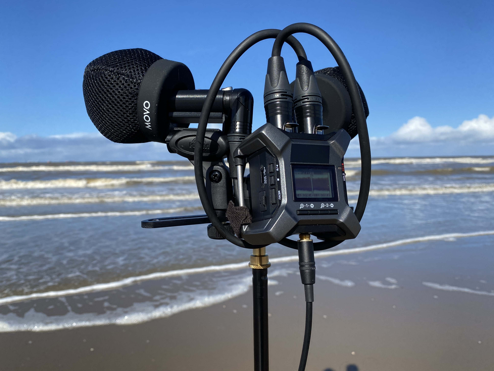
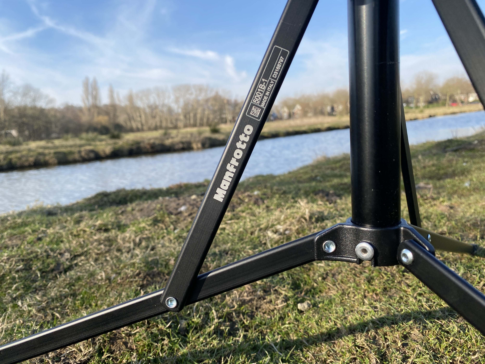

Welcome to my diary where I share my adventures in field recording, my battles with perfectionism, and the raw, beautiful moments I capture along the way.
Field Recording at Katwijkse Uitwatering: Where Sweet Water Meets Salt and Wind
Posted on March 14, 2025 (16:15–17:00)
Today, I set out to capture the unique soundscape at Katwijkse Uitwatering, where the fresh flow of the Old Rhine meets the salt of the sea, using my trusty Zoom F3 and Line Audio CM4s in an ORTF configuration.
It was a sunny day, yet very windy and cold. Finding the right position to record the subtle little waves proved challenging—my mics were pointed downward toward the water, while my tripod’s feet sank into what felt like quicksand.
I wrestled with the decision: should I capture the forceful impact of waves hitting the dock or the gentle murmur of waves reaching the sandy parts of the uitwatering? My Movo windscreens did a decent job, though not perfectly, leaving me ready to push my gear into risky territories.
At the very start, I even waded into the water—my Meindle boots quickly filling with water—a bold reminder that the kid in me isn’t afraid to push my gear into dangerous territories.
Mid-session, an idea struck me to record the sound of wind blowing sand off the pavement. After repositioning my tripod three times in a messy, challenging effort, I drove back with one clear thought: every sound is interesting, leaving me to wonder, "Is wind our biggest enemy in field recording or our best friend?"
Field Recording at Strand Wassenaarseslag: Capturing Waves and Foam
Posted on March 12, 2025
Today’s session at Strand Wassenaarseslag was all about the sea. I was initially worried that the strong tide and gusty wind might tip my tripod over.
The atmosphere was quiet and reflective as I arranged my usual rig—a Zoom F3 paired with Line Audio CM4 mics in an ORTF setup on my Manfrotto 5001B Nano Stand—and upgraded to the new Movo WST50 Ballistic Nylon Windscreens, which performed significantly better than my old WS8 Rode windscreens.
I even mulled over small improvements, such as adding a hook to secure my headphones when not in use, and even considered a configuration that would allow listening from 5–10 meters away—though I’m still figuring out the details.
The sound of the waves was constant and compelling—the deep, rolling rhythm of the ocean paired with the delicate hiss of foam breaking on the sand kept the sea’s steady song alive, even as a light rain began.

After about 45 minutes of recording, I sat on the damp sand, absorbing the pure sound of the sea. This session reminded me that letting go of perfection is essential; sometimes the simplest elements offer the most genuine, unedited moments.
Field Recording at Landje van Bremmer: Practical Challenges & Clear Insights
Posted on March 6, 2025
Today I headed to Landje van Bremmer for my very first field recording session, and I loved every moment of it. Reaching the spot meant hopping a fence—yes, I even dodged a potential run-in with an upset farmer.
The field was a bit muddy, and a few curious sheep were around, making the experience both practical and unexpectedly interesting. A quick note: avoid wearing jeans in such conditions, as the wet, soggy environment is less than comfortable.
I was a bit worried about the wind, but in post-production, the high-pass filter took care of any unwanted low-frequency noise. I set up my usual rig—a Zoom F3 paired with Line Audio CM4 mics in an ORTF configuration on my Manfrotto 5001B Nano Stand, complemented by WS8 Rode windscreens.
The soundscape featured clear honks from geese, the rustle of reeds, and ambient natural sounds that together created a balanced backdrop, with every unexpected moment embraced as genuine.


Overall, this session was an exercise in managing unpredictable outdoor conditions while battling my own urge for perfection. It reinforced that field recording is about capturing real moments—even if they aren’t flawless.